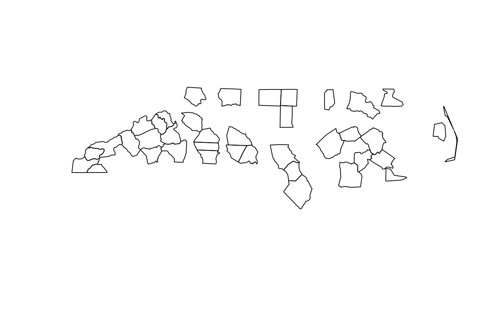

Read an Arrow multi-file dataset and create sf object
read_sf_dataset.RdRead an Arrow multi-file dataset and create sf object
Arguments
- dataset
a
Datasetobject created byarrow::open_datasetor anarrow_dplyr_query- find_geom
logical. Only needed when returning a subset of columns. Should all available geometry columns be selected and added to to the dataset query without being named? Default is
FALSEto require geometry column(s) to be selected specifically.
Value
object of class sf
Details
This function is primarily for use after opening a dataset with
arrow::open_dataset. Users can then query the arrow Dataset
using dplyr methods such as filter or
select. Passing the resulting query to this function
will parse the datasets and create an sf object. The function
expects consistent geographic metadata to be stored with the dataset in
order to create sf objects.
Examples
# read spatial object
nc <- sf::st_read(system.file("shape/nc.shp", package="sf"), quiet = TRUE)
# create random grouping
nc$group <- sample(1:3, nrow(nc), replace = TRUE)
# use dplyr to group the dataset. %>% also allowed
nc_g <- dplyr::group_by(nc, group)
# write out to parquet datasets
tf <- tempfile() # create temporary location
on.exit(unlink(tf))
# partitioning determined by dplyr 'group_vars'
write_sf_dataset(nc_g, path = tf)
list.files(tf, recursive = TRUE)
#> [1] "group=1/part-0.parquet" "group=2/part-0.parquet" "group=3/part-0.parquet"
# open parquet files from dataset
ds <- arrow::open_dataset(tf)
# create a query. %>% also allowed
q <- dplyr::filter(ds, group == 1)
# read the dataset (piping syntax also works)
nc_d <- read_sf_dataset(dataset = q)
nc_d
#> Simple feature collection with 36 features and 15 fields
#> Geometry type: MULTIPOLYGON
#> Dimension: XY
#> Bounding box: xmin: -84.32385 ymin: 34.30457 xmax: -75.45698 ymax: 36.58965
#> Geodetic CRS: NAD27
#> First 10 features:
#> AREA PERIMETER CNTY_ CNTY_ID NAME FIPS FIPSNO CRESS_ID BIR74 SID74
#> 1 0.114 1.442 1825 1825 Ashe 37009 37009 5 1091 1
#> 2 0.143 1.630 1828 1828 Surry 37171 37171 86 3188 5
#> 3 0.097 1.670 1833 1833 Hertford 37091 37091 46 1452 7
#> 4 0.114 1.352 1838 1838 Caswell 37033 37033 17 1035 2
#> 5 0.153 1.616 1839 1839 Rockingham 37157 37157 79 4449 16
#> 6 0.072 1.085 1842 1842 Vance 37181 37181 91 2180 4
#> 7 0.190 2.204 1846 1846 Halifax 37083 37083 42 3608 18
#> 8 0.111 1.392 1904 1904 Alamance 37001 37001 1 4672 13
#> 9 0.059 1.319 1927 1927 Mitchell 37121 37121 61 671 0
#> 10 0.122 1.516 1932 1932 Caldwell 37027 37027 14 3609 6
#> NWBIR74 BIR79 SID79 NWBIR79 group geometry
#> 1 10 1364 0 19 1 MULTIPOLYGON (((-81.47276 3...
#> 2 208 3616 6 260 1 MULTIPOLYGON (((-80.45634 3...
#> 3 954 1838 5 1237 1 MULTIPOLYGON (((-76.74506 3...
#> 4 550 1253 2 597 1 MULTIPOLYGON (((-79.53051 3...
#> 5 1243 5386 5 1369 1 MULTIPOLYGON (((-79.53051 3...
#> 6 1179 2753 6 1492 1 MULTIPOLYGON (((-78.49252 3...
#> 7 2365 4463 17 2980 1 MULTIPOLYGON (((-77.33221 3...
#> 8 1243 5767 11 1397 1 MULTIPOLYGON (((-79.24619 3...
#> 9 1 919 2 4 1 MULTIPOLYGON (((-82.11885 3...
#> 10 309 4249 9 360 1 MULTIPOLYGON (((-81.32813 3...
plot(sf::st_geometry(nc_d))
